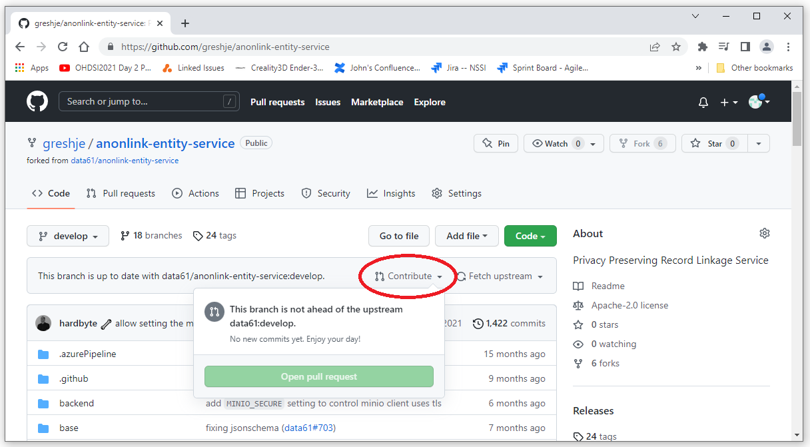
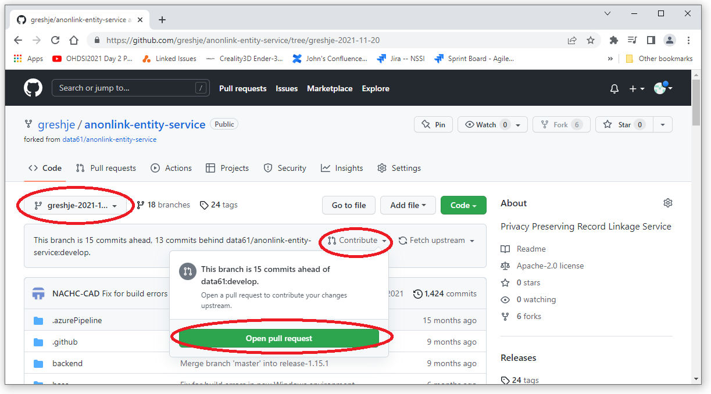
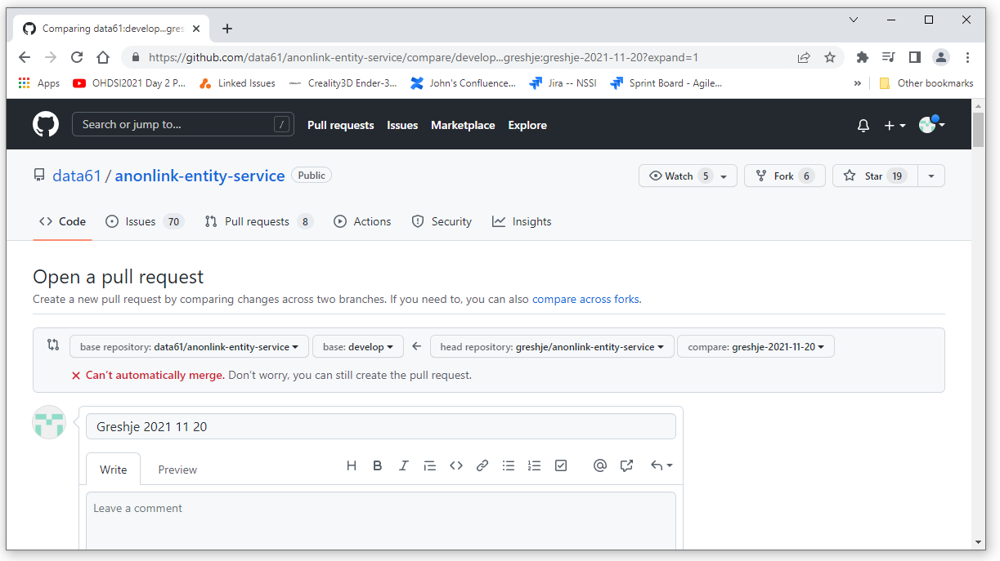

To get to the interface that allows you to compare a fork or branch in github, you need to first pretend you would like to create a pull request.
Navigate to the repository and branch that contains the latest version of your project. Select the "Contribute" drop down as shown below. If the selected branch does not contain any changes, the opption to create a pull request will not be available.
Select a branch that does have changes and then select "Open pull request"
After selecting "Open pull request", the initial screen will look something like the first screen shot below.
Scroll towards the bottom of the page to see the changes as shown in the second screen shot below.
